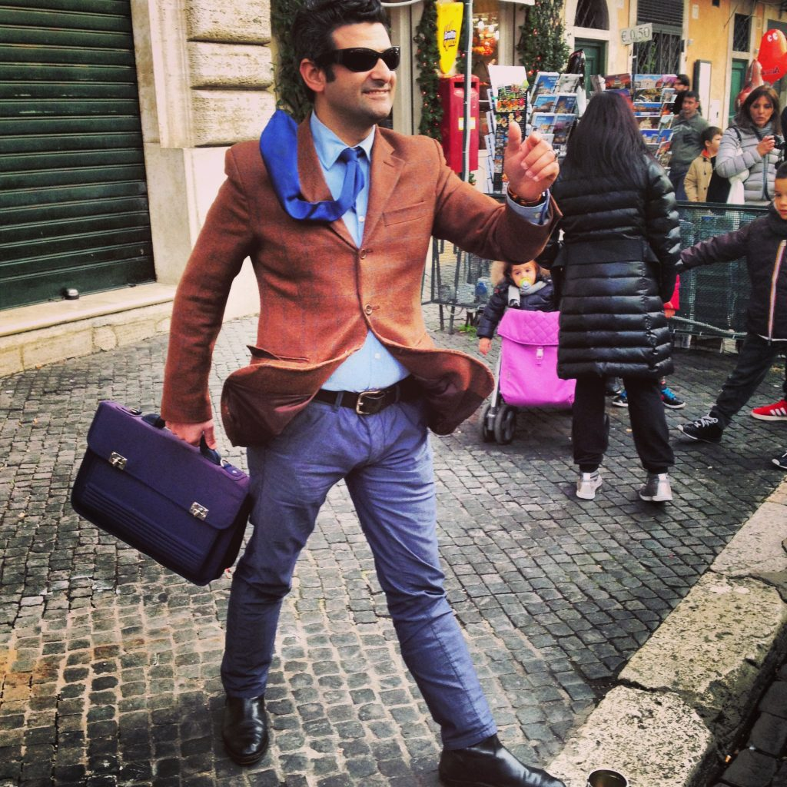

A street guy in Rome (how can he stands so still for hours?)
If you need to get information or directions, here’s a tip: ask a young person as they are more likely to speak English. Usually older people don’t speak English at all, even though they are always happy to help. Be ready, as they will speak Italian to you as if you understand what they are saying, and don't try to read their lips, but their hands instead and you'll surely get the point. {This is an excerpt from chapter 15 “Miscellaneous information” of the eBook “Italy from the Inside. A native Italian reveals the secrets of traveling in Italy”. Buy our eBook on Amazon and leave us a review! If it’s good, you’ll make us happy, if it’s bad, you’ll make us improve. Thank you either way!}